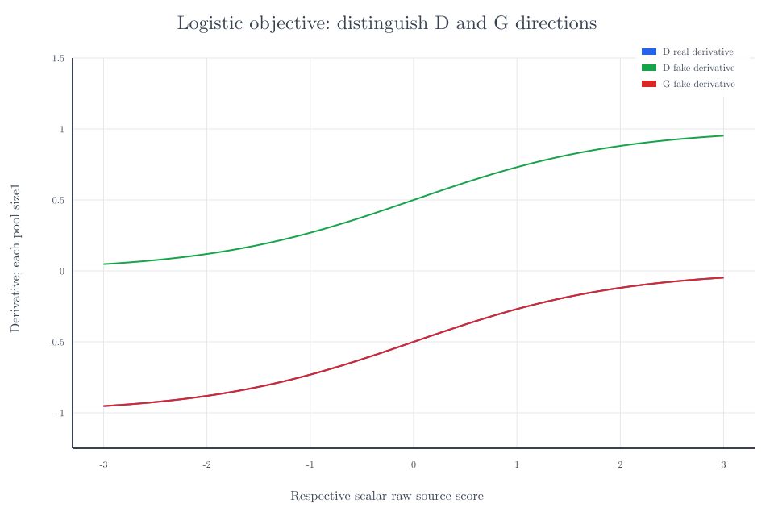
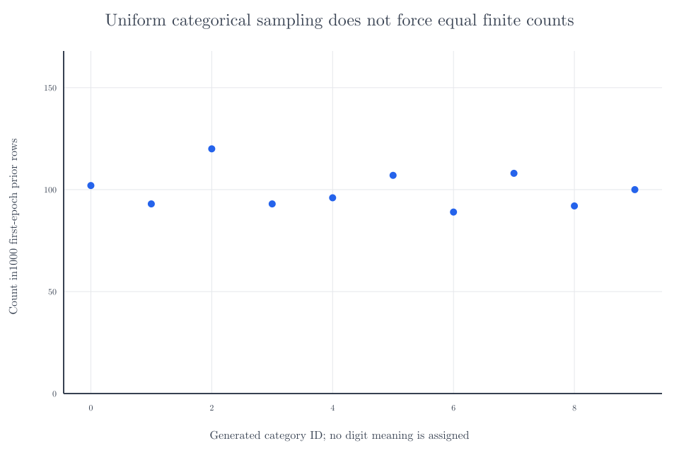
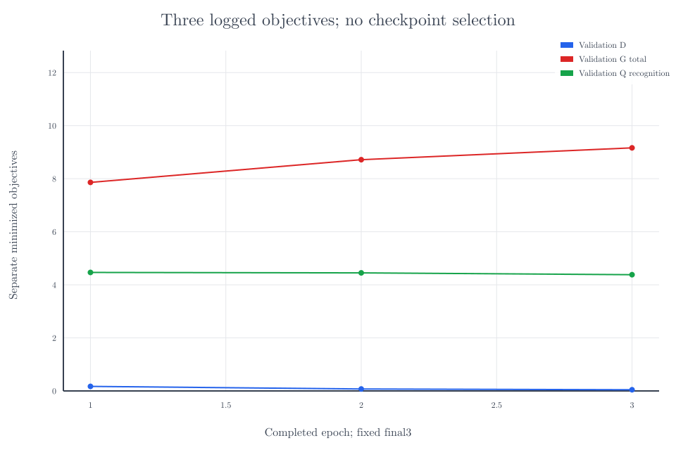
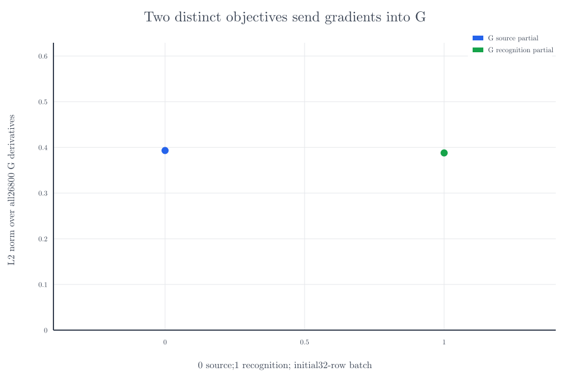
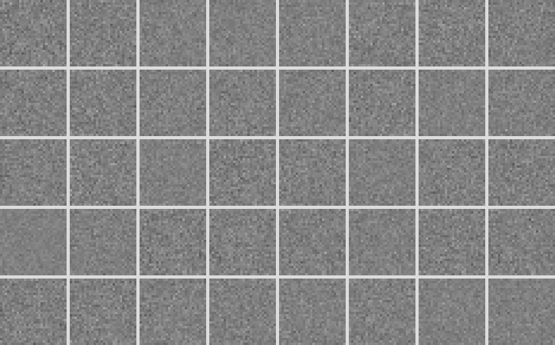
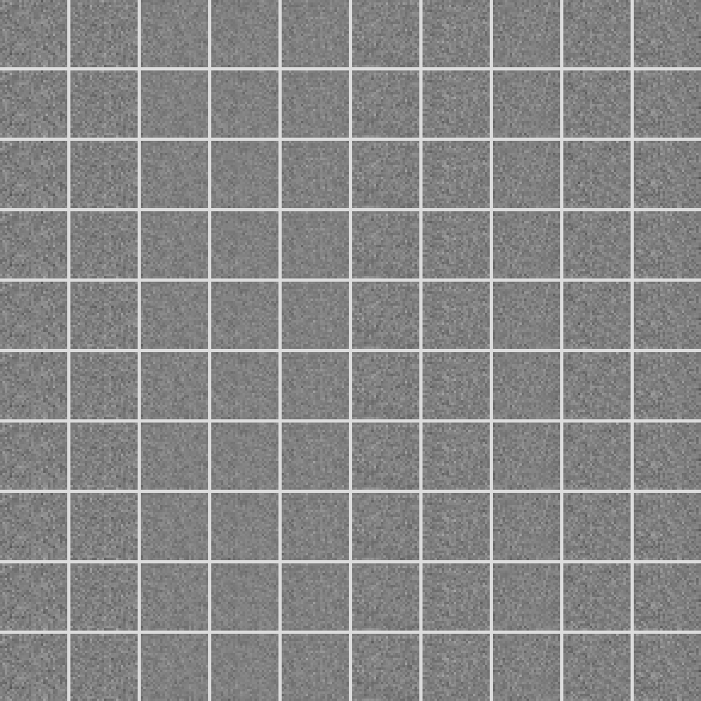
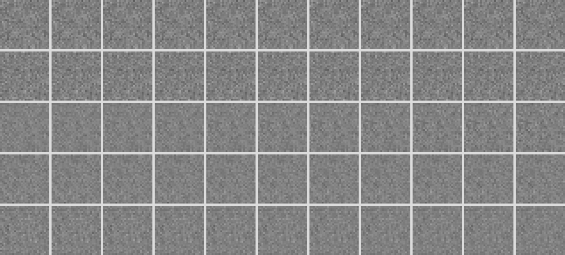
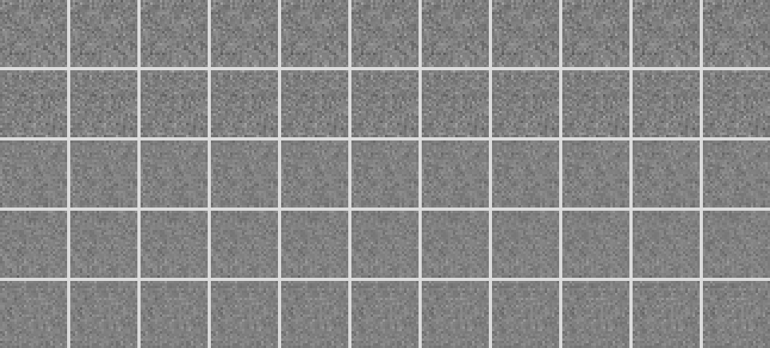
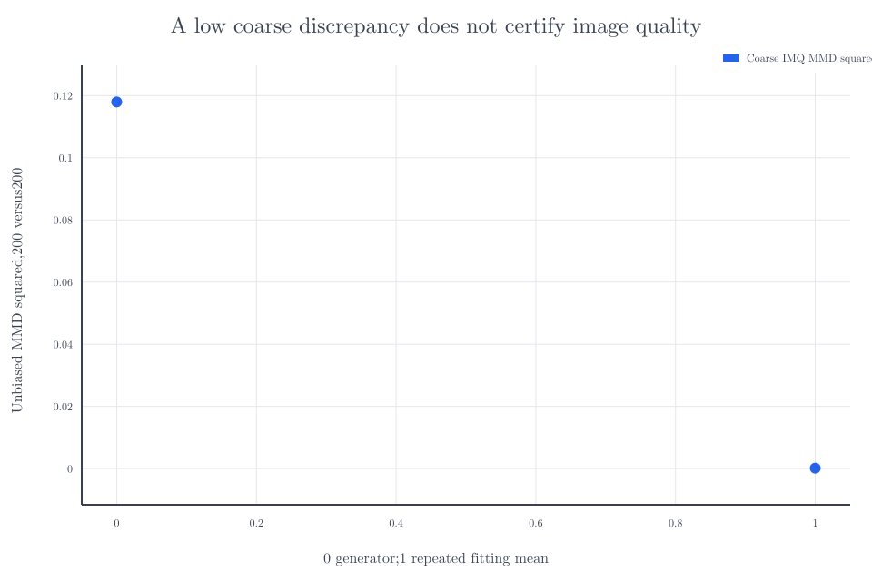
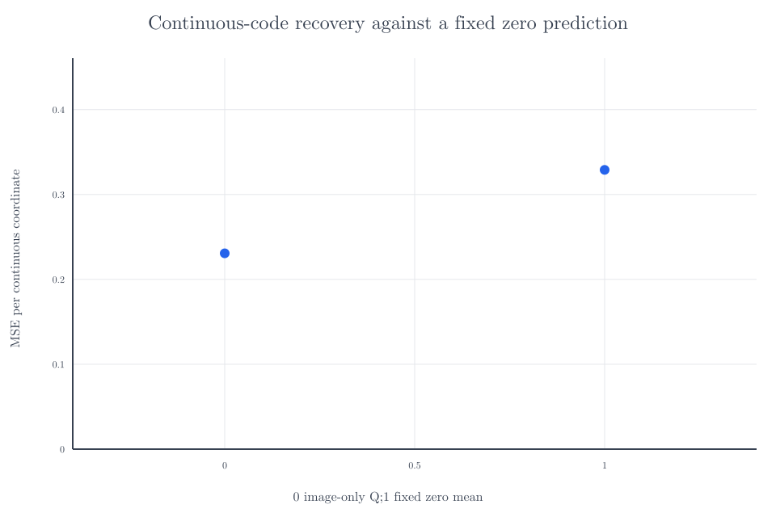

InfoGAN: Generated Codes and a Separate Recognizer
Abstract
A small InfoGAN fits 1000 balanced MNIST images using a generated ten-way category, two uniform continuous codes and sixteen Gaussian noise coordinates. None of the real digit labels enters fitting. G produces sigmoid pixels; image-only D predicts a source logit; independent image-only Q predicts the generated category and continuous means. Three Adam states perform D, then Q, then a fresh G write, 96 times per store and 288 writes in total. A fixed third epoch supplies the final checkpoint. The complete editable native program preserves every original artifact, including weak grey images, category recovery .115 and a negative empirical variational score. Small algebra examples, exact prior words, separate G partials, full code traversals and independent numerical checks explain the computations without claiming semantic disentanglement or convergence.
Codes are generated inputs and recognition targets
G receives Gaussian noise z, a one-hot generated category c and continuous codes u. D receives an image alone, on real and fake branches. Q receives a generated image alone; c and u become targets in its recognition loss R. Q has its own parameters, separate from D. G minimizes non-saturating source loss plus R, while Q minimizes R itself.
The information objective follows [Chen et al., InfoGAN (2016)](https://arxiv.org/abs/1606.03657). This report retains the repository's dense teaching variant: independent Q, fixed unit recognition variance, weight one for R and explicit D–Q–G writes. The paper commonly shares convolutional features between D and Q; those are not this small architecture. No prior category is assigned a digit meaning or matched to a true MNIST label.
#include <dm/dm.hpp>
int main() {
std::filesystem::create_directories("build");
dm::graphics::Diagram d(52, 1250);
dm::graphics::DiagramNodeStyle s;
s.width = 7.5;
s.height = 3.;
s.font_size = 28;
d.node("real", {-15, 9}, "Real pixels784", s)
.node("dr", {15, 9}, "Shared image-only D\nRaw source logit", s)
.node("codes", {-15, 0}, "Noise16 + category10\n+ continuous2", s)
.node("g", {-5, 0}, "Independent G\ntanh32 → sigmoid784", s)
.node("fake", {5, 0}, "Generated pixels784", s)
.node("df", {15, 0}, "Same D parameters", s)
.node("q", {5, -9}, "Independent Q\ntanh32; six leaves", s)
.node("heads", {15, -9}, "Category logits10\nContinuous means2", s)
.edge("real", "dr")
.edge("codes", "g")
.edge("g", "fake")
.edge("fake", "df")
.edge("fake", "q")
.edge("q", "heads")
.text(
{0, -14}, "Codes are targets in R, not Q inputs. D then Q then G; G fits source + R.", 20)
.save_svg("build/infogan_method.svg");
}
Hand-check two categorical targets and one continuous coordinate
Take two generated-prior categories, targets0 and1, with zero logits for both rows. The categorical CE is log2. Give Q continuous means zero and choose algebra targets u=(-1,1). With fixed unit variance, the per-row Gaussian NLL is
Here U=1, so R_u=(1+log(2π))/2 and R≈2.112086. Q's mean derivatives are(.5,.5),
and the category-logit derivatives are(.25,.25) and(.25,-.25). Targets also have live
continuous derivatives, although the fitting loop updates only selected parameter stores.
The softmax convenience field is not consumed by the loss: CE uses logits directly.
For independent uniform category C and uniform[1,1] coordinates, fixed prior entropy
is log(C)+U log2. The native .725791 in this deliberately chosen two-row fixture. This is algebra,
not a random-sample measurement of mutual information. In the experiment, batch averaging
is a Monte Carlo score of the variational objective, without a finite-sample guarantee on
true mutual information. A negative score never implies negative true mutual information.lower_bound field computes that constant minus R;
it is approximately
#include <dm/dm.hpp>
int main() {
namespace n = dm::nn;
namespace m = n::models;
auto t = n::DType::Float64;
const auto c = n::tensor({0, 1}, {2}, n::DType::Int64), target = n::tensor({-1, 1}, {2, 1}, t);
std::vector<double> x, recognition, bound;
for (int k = -40; k <= 40; ++k) {
x.push_back(k / 20.);
m::InfoRecognition q{n::zeros({2, 2}, t), {}, n::full({2, 1}, k / 20., t)};
auto loss = m::InfoGanRecognitionLoss(q, c, target);
recognition.push_back(loss.total.item());
bound.push_back(loss.lower_bound.item());
}
auto p = dm::graphics::RPlot::create();
p.lines(x, recognition, "Recognition R", {37, 99, 235}, 2.)
.lines(x, bound, "Fixed entropy minus R", {220, 38, 38}, 2.)
.y_limits(-3.3, 6)
.x_label("Shared predicted continuous mean; targets -1,+1")
.y_label("Nats per generated row")
.title("Unit variance: recognition NLL and its entropy-offset score")
.save_svg("build/infogan_toy.svg");
m::InfoRecognition q{
n::zeros({2, 2}, t).requires_grad_(), {}, n::zeros({2, 1}, t).requires_grad_()};
auto loss = m::InfoGanRecognitionLoss(q, c, target);
auto derivatives = n::grad(loss.total, {q.logits, q.mean});
std::print(
"| fixture quantity | value |\n|---|---:|\n| categorical CE |{:.9f}|\n| continuous NLL "
"|{:.9f}|\n| total R |{:.9f}|\n| entropy minus R |{:.9f}|\n",
loss.categorical.item(),
loss.continuous.item(),
loss.total.item(),
loss.lower_bound.item());
std::print(
"Logit gradients: {}; mean gradients: {}.\n",
derivatives[0].values_str(),
derivatives[1].values_str());
}| fixture quantity | value |
|---|---|
| categorical CE | 0.693147181 |
| continuous NLL | 1.418938533 |
| total R | 2.112085714 |
| entropy minus R | -0.725791353 |
Logit gradients: [[-0.25, 0.25], [0.25, -0.25]]; mean gradients: [[0.5], [-0.5]].

The exact generated prior is independent of the digit labels
For each row a local mt19937 supplies a category word v, rejecting v≥4294967290, then sets c=v modulo10. Two subsequent words give continuous values 2((v+.5)/2³²)-1. Arithmetic is Double followed by one final Float32 cast; rounding can reach the endpoints. The accepted category word and the two continuous words are retained as exact Float64 integers. Rejected words do not occupy raw columns. Separately seeded category and continuous streams would not reproduce this protocol.
The first fitting prior uses seed 5382. Its first category word2873073520 gives category 0; its next words2159082293 and4137076914 give approximately .00540104 and .92647654. Finite category frequencies vary around100; they are not forced balanced and do not match the true digit labels. The source dataset happens to have balanced digit classes, which is a separate preparation property. The following native block needs no MNIST data.
#include <dm/dm.hpp>
int main() {
namespace n = dm::nn;
auto c = n::models::InfoPrior(1000, 5382);
auto count =
n::sum(n::one_hot(n::cast(c.category, n::DType::Int64), 10), {0}).to_vector<double>();
std::vector<double> axis{0, 1, 2, 3, 4, 5, 6, 7, 8, 9};
auto p = dm::graphics::RPlot::create();
p.points(axis, count, "", {37, 99, 235}, 5.)
.y_limits(0, 1.4 * *std::max_element(count.begin(), count.end()))
.x_label("Generated category ID; no digit meaning is assigned")
.y_label("Count in1000 first-epoch prior rows")
.title("Uniform categorical sampling does not force equal finite counts")
.save_svg("build/infogan_prior.svg");
std::print(
"| row | category word | category | continuous word0 | continuous word1 | u0 | u1 "
"|\n|---|---:|---:|---:|---:|---:|---:|\n");
for (int row = 0; row < 4; ++row)
std::print(
"|{}|{:.0f}|{:.0f}|{:.0f}|{:.0f}|{:.9f}|{:.9f}|\n",
row,
c.raw.at({row, 0}),
c.category.at({row}),
c.raw.at({row, 1}),
c.raw.at({row, 2}),
c.continuous.at({row, 0}),
c.continuous.at({row, 1}));
}| row | category word | category | continuous word0 | continuous word1 | u0 | u1 |
|---|---|---|---|---|---|---|
| 0 | 2873073520 | 0 | 2159082293 | 4137076914 | 0.005401040 | 0.926476538 |
| 1 | 1184340869 | 9 | 3924616428 | 325940591 | 0.827541947 | -0.848222077 |
| 2 | 1372298291 | 1 | 1298187572 | 3078163632 | -0.395484298 | 0.433381647 |
| 3 | 3244090601 | 1 | 3189635439 | 2886599427 | 0.485289752 | 0.344177604 |

Native MNIST preparation and three separate small networks
The native mnist-assets recipe prepares the saliency pools:1000 fitting,200 validation,
and200 held-out test images. Each true digit contributes100/20/20 observations. The loader
checks source IDs, original train/test boundaries, disjoint pools, shape and Float32[0,1]
scaling. True labels are used only for balance checks and this preview. They do not enter
G,D,Q or any fitting loss. The preview retains the first two fitting images for every digit.
#include <dm/dm.hpp>
int main() {
namespace n = dm::nn;
auto home = std::filesystem::path(dm::datasets::data_home());
dm::datasets::prepare_example_data("mnist-assets", home);
auto pools = n::models::LoadSaliency(home / "saliency");
std::vector<std::int64_t> rows;
auto labels = pools[0].labels.to_vector<std::int32_t>();
for (int c = 0; c < 10; ++c) {
int count = 0;
for (std::int64_t row = 0; row < 1000 && count < 2; ++row)
if (labels[row] == c) {
rows.push_back(row);
++count;
}
}
n::save_image_grid(
n::take_rows(pools[0].images, rows), "build/infogan_pools.png", 2, 0, 1, 4, 220 / 255., 3);
std::print(
"| pool | rows | each true digit | role |\n|---|---:|---:|---|\n| fitting |1000|100| Adam "
"writes |\n| validation |200|20| logs only |\n| test |200|20| fixed final diagnostics |\n");
}| pool | rows | each true digit | role |
|---|---|---|---|
| fitting | 1000 | 100 | Adam writes |
| validation | 200 | 20 | logs only |
| test | 200 | 20 | fixed final diagnostics |

| Store | Mapping; hidden before heads | Leaves | Values | Seed |
|---|---|---|---|---|
| G | concat(z16,onehot10,u2)→tanh32→sigmoid784 | 4 | 26800 | 5303 |
| D | image784→tanh32→raw source1 | 4 | 25153 | 5309 |
| Q | image784→tanh32→category 10, then continuous2 means | 6 | 25516 | 5317 |
| Total | Three distinct parameter stores | 14 | 77469 | — |
Each layer creates W before b. Q's category head precedes its continuous head in the initializer stream. Q predicts unbounded linear means, not clipped codes or fitted variances. The canonical tanh/sigmoid map, raw source score and categorical CE are reused; there is no second implementation of their numerical algebra in this report.
Complete fitting loop: D, then Q, then a fresh G objective
Write r=D(x),f=D(G(z,c,u)). D minimizes mean sp(-r)+mean sp(f), with stable softplus sp. Q minimizes R above. G minimizes mean sp(-f)+R, with weight one on recognition and without subtracting fixed prior entropy from its reported loss. All three stores have independent Adam states with learning rate .0002,β1=.5,β2=.999,ε=1e-8.
BatchOrder(1000,32,5369) visits every fitting row once per epoch:31 full batches and an eight-row tail. Fitting noise seeds 5364/5365/5366 pair with prior seeds 5382/5383/5384. Validation noise/prior use5323/5347; test uses5333/5351. The third epoch is fixed in advance. Validation logs do not select weights or an epoch. The initial test forward is archived as an explicit diagnostic control; test outcomes never choose writes, hyperparameters, noise banks, schedule or checkpoint weights.
The editable program prepares data, owns all three optimizers, performs all 288 writes, restores every checkpoint tensor and tests immutable inference. The first minibatch also archives G's source and recognition partials separately and verifies that a D-only write leaves Q's partial bit exact with G fixed. Every selected phase recomputes its own forward. The native full forward returns fifteen live fields; O(N²) MMD is added explicitly during evaluation. No compiled experiment runner or legacy model helper hides orchestration.
#include <dm/dm.hpp>
namespace nn = dm::nn;
namespace m = nn::models;
using Arrays = std::map<std::string, nn::Tensor>;
using nn::Tensor;
namespace {
void Require(bool condition, const std::string& message) {
if (!condition)
throw std::runtime_error(message);
}
void SaveArrays(const std::string& path, const Arrays& a) {
nn::save_npz(path, nn::NamedTensors(a.begin(), a.end()));
}
bool Equal(const Tensor& a, const Tensor& b) {
return nn::equal_bits(a, b);
}
bool Equal(const Arrays& a, const Arrays& b) {
if (a.size() != b.size())
return false;
for (const auto& [key, value] : a)
if (!b.count(key) || !Equal(value, b.at(key)))
return false;
return true;
}
Tensor Gaussian(std::int64_t rows, std::int64_t width, std::uint64_t seed) {
return nn::cast(
m::GaussianNoise({rows, width}, 1, seed).reshape({rows, width}), nn::DType::Float32);
}
double MaxAbsDiff(const Tensor& a, const Tensor& b) {
return nn::max(nn::abs(nn::cast(a, nn::DType::Float64) - nn::cast(b, nn::DType::Float64))).item();
}
void Mosaic(const std::filesystem::path& path, const Tensor& image, std::int64_t columns) {
nn::save_image_grid(
image.reshape({image.size(0), 28, 28, 1}), path.string(), columns, 0, 1, 4, 220 / 255., 3);
}
Arrays Fields(const m::InfoGanOutput& o) {
return {
{"fake", o.fake},
{"real_logit", o.real_logit},
{"fake_logit", o.fake_logit},
{"real_probability", o.real_probability},
{"fake_probability", o.fake_probability},
{"discriminator_loss", o.discriminator_loss},
{"generator_loss", o.generator_loss},
{"source_generator_loss", o.source_generator_loss},
{"recognition_loss", o.recognition_loss},
{"categorical_loss", o.categorical_loss},
{"continuous_loss", o.continuous_loss},
{"mi_lower_bound", o.mi_lower_bound},
{"q_logits", o.q_logits},
{"q_probability", o.q_probability},
{"q_mean", o.q_mean}};
}
double Value(const Arrays& a, const std::string& key) {
return a.at(key).item();
}
void SavePrior(const std::filesystem::path& path, const m::InfoCodes& codes, const Tensor& z) {
SaveArrays(
path.string(),
{{"category", codes.category},
{"continuous", codes.continuous},
{"raw", codes.raw},
{"z", z}});
}
} // namespace
int main() {
const std::filesystem::path root = "build/infogan";
const int epochs = 3;
const auto data = std::filesystem::path(dm::datasets::data_home()) / "saliency";
dm::datasets::prepare_example_data("mnist-assets", data.parent_path());
std::filesystem::create_directories(root);
const auto pools = m::LoadSaliency(data);
const Tensor vn = Gaussian(200, 16, 5323), tn = Gaussian(200, 16, 5333);
const auto vc = m::InfoPrior(200, 5347), tc = m::InfoPrior(200, 5351);
SavePrior(root / "validation_prior.npz", vc, vn);
SavePrior(root / "test_prior.npz", tc, tn);
nn::ParameterStore g(5303), d(5309), q(5317);
std::vector<nn::ParameterStore*> stores{&g, &d, &q};
{
nn::NoGradGuard guard;
m::InfoGan(
g,
d,
q,
nn::zeros({2, 784}),
nn::zeros({2, 16}),
nn::zeros({2}, nn::DType::Int32),
nn::zeros({2, 2}));
}
auto snapshot = [&]() {
Arrays out;
for (int k = 0; k < 3; ++k)
for (const auto& name : stores[k]->names())
out.emplace(std::to_string(k) + "/" + name, stores[k]->at(name).detach().clone());
return out;
};
auto forward = [&](const Tensor& x, const Tensor& z, const Tensor& c, const Tensor& u) {
return Fields(m::InfoGan(g, d, q, x.reshape({x.size(0), 784}), z, c, u));
};
auto evaluate = [&](const Tensor& x, const Tensor& z, const Tensor& c, const Tensor& u) {
nn::NoGradGuard guard;
auto out = forward(x, z, c, u);
out.emplace(
"pixel_mmd", m::ImqMmd(m::GanCoarsePixels(x), m::GanCoarsePixels(out.at("fake"))).value);
return out;
};
nn::OptimizerConfig config;
config.kind = nn::OptimizerKind::Adam;
config.beta1 = .5;
config.beta2 = .999;
config.epsilon = 1e-8;
nn::Optimizer go(g, .0002, config), disc(d, .0002, config), rec(q, .0002, config);
std::vector<nn::Optimizer*> optimizers{&go, &disc, &rec};
Require(
g.count() == 26800 && d.count() == 25153 && q.count() == 25516 &&
g.size() + d.size() + q.size() == 14,
"77469 parameters 14 tensors");
SaveArrays((root / "initial_arrays.npz").string(), snapshot());
SaveArrays(
(root / "initial_outputs.npz").string(),
evaluate(pools[2].images, tn, tc.category, tc.continuous));
nn::BatchOrder order(1000, 32, 5369);
int steps = 0;
std::ofstream history(root / "history.tsv"), batches(root / "batches.tsv");
history.precision(17);
history
<< "epoch\tdiscriminator_loss\tgenerator_loss\trecognition_loss\tmi_lower_bound\tpixel_mmd\n";
batches << "epoch\tstep\trow\tsource_id\n";
const auto source = nn::cast(pools[0].source, nn::DType::Int64).to_vector<std::int64_t>();
const auto started = std::chrono::steady_clock::now();
for (int epoch = 1; epoch <= epochs; ++epoch) {
const Tensor noise = Gaussian(1000, 16, 5363 + epoch);
const auto codes = m::InfoPrior(1000, 5381 + epoch);
order.begin_epoch();
int seen = 0;
for (;;) {
const auto rows = order.next();
if (rows.empty())
break;
const Tensor x = nn::take_rows(pools[0].images, rows), z = nn::take_rows(noise, rows),
c = nn::take_rows(codes.category, rows),
u = nn::take_rows(codes.continuous, rows);
std::vector<Tensor> q_before;
if (!steps) {
SaveArrays((root / "first_forward.npz").string(), evaluate(x, z, c, u));
Arrays partials;
for (const std::string component :
{"source_generator_loss", "recognition_loss", "generator_loss"}) {
const auto values = nn::grad(forward(x, z, c, u).at(component), g.parameters());
const auto names = g.names();
for (std::size_t k = 0; k < names.size(); ++k)
partials.emplace(component + "/" + names[k], values[k]);
}
for (const auto& name : g.names())
Require(
nn::max(
nn::abs(
partials.at("generator_loss/" + name) -
partials.at("source_generator_loss/" + name) -
partials.at("recognition_loss/" + name)))
.item() < 2e-6,
"G source and recognition partials sum to total");
SaveArrays((root / "initial_g_partials.npz").string(), partials);
q_before = nn::grad(forward(x, z, c, u).at("recognition_loss"), q.parameters());
}
for (int group : {1, 2, 0}) {
const auto before = steps ? Arrays{} : snapshot();
if (!steps && group == 2) {
const auto after = nn::grad(forward(x, z, c, u).at("recognition_loss"), q.parameters());
for (std::size_t k = 0; k < after.size(); ++k)
Require(
nn::equal_bits(q_before[k], after[k]),
"D write leaves Q partial unchanged with G fixed");
}
// Every phase recomputes after the previous selected-store write.
const auto out = forward(x, z, c, u);
const auto loss = out.at(
group == 0 ? "generator_loss"
: group == 1 ? "discriminator_loss"
: "recognition_loss");
optimizers[group]->step(nn::grad(loss, stores[group]->parameters()));
if (!steps) {
const auto after = snapshot();
bool changed = false;
for (const auto& [key, value] : before) {
if (key.rfind(std::to_string(group) + "/", 0) == 0)
changed |= !nn::equal_bits(value, after.at(key));
else
Require(nn::equal_bits(value, after.at(key)), "unselected group unchanged");
}
Require(changed, "selected group changed");
}
}
for (auto row : rows)
batches << epoch << '\t' << steps << '\t' << row << '\t' << source[row] << '\n';
++steps;
seen += int(rows.size());
}
Require(seen == 1000, "all 1000 fit cases once per epoch");
const auto v = evaluate(pools[1].images, vn, vc.category, vc.continuous);
history << epoch;
for (auto key :
{"discriminator_loss",
"generator_loss",
"recognition_loss",
"mi_lower_bound",
"pixel_mmd"})
history << '\t' << Value(v, key);
history << '\n';
std::cout << "epoch " << epoch << ": D=" << Value(v, "discriminator_loss")
<< ", G=" << Value(v, "generator_loss")
<< ", recognition=" << Value(v, "recognition_loss")
<< ", MI bound=" << Value(v, "mi_lower_bound") << std::endl;
}
const double seconds =
std::chrono::duration<double>(std::chrono::steady_clock::now() - started).count();
const auto checkpoint = (root / "final.npz").string();
Require(
steps == 96 && go.iterations() == 96 && disc.iterations() == 96 && rec.iterations() == 96,
"288 D-Q-G writes");
SaveArrays(checkpoint, snapshot());
nn::ParameterStore restored_g(1), restored_d(2), restored_q(3);
{
nn::NoGradGuard guard;
m::InfoGan(
restored_g,
restored_d,
restored_q,
nn::zeros({2, 784}),
nn::zeros({2, 16}),
nn::zeros({2}, nn::DType::Int32),
nn::zeros({2, 2}));
}
std::vector<nn::ParameterStore*> restored_stores{&restored_g, &restored_d, &restored_q};
for (const auto& [name, value] : nn::load_npz(checkpoint))
restored_stores.at(name[0] - '0')->set(name.substr(2), value);
auto restored_arrays = [&]() {
Arrays out;
for (int k = 0; k < 3; ++k)
for (const auto& name : restored_stores[k]->names())
out.emplace(std::to_string(k) + "/" + name, restored_stores[k]->at(name).detach().clone());
return out;
};
auto sample = [&](const Tensor& z, const Tensor& c, const Tensor& u) {
nn::NoGradGuard guard;
return m::InfoGanGenerate(restored_g, z, c, u);
};
auto restored_evaluate = [&](const Tensor& x, const Tensor& z, const Tensor& c, const Tensor& u) {
nn::NoGradGuard guard;
auto out = Fields(
m::InfoGan(restored_g, restored_d, restored_q, x.reshape({x.size(0), 784}), z, c, u));
out.emplace(
"pixel_mmd", m::ImqMmd(m::GanCoarsePixels(x), m::GanCoarsePixels(out.at("fake"))).value);
return out;
};
auto recognize = [&](const Tensor& image) {
nn::NoGradGuard guard;
const auto r = m::InfoGanRecognize(restored_q, image.reshape({image.size(0), 784}));
return Arrays{{"q_probability", r.probability}, {"q_mean", r.mean}};
};
Require(Equal(snapshot(), restored_arrays()), "all groups restore exact");
const auto before = restored_arrays();
const auto output = restored_evaluate(pools[2].images, tn, tc.category, tc.continuous);
const Tensor repeat = sample(tn, tc.category, tc.continuous);
Require(Equal(repeat, output.at("fake")), "noise+codes ONLY generation exact");
const auto recognition = recognize(repeat);
for (auto key : {"q_probability", "q_mean"})
Require(
Equal(recognition.at(key), output.at(key)),
"Q image ONLY without targets/noise/code exact");
const double parity = MaxAbsDiff(
sample(
nn::take_rows(tn, {0}),
nn::take_rows(tc.category, {0}),
nn::take_rows(tc.continuous, {0})),
nn::take_rows(repeat, {0}));
Require(parity < 2e-6, "single batch parity");
SaveArrays((root / "outputs.npz").string(), output);
SaveArrays((root / "image_only_recognition.npz").string(), recognition);
// Codes are sampled prior categories, not digit labels. Traversals include all outputs.
std::vector<std::int64_t> grid_rows;
std::vector<std::int32_t> grid_category;
for (int c = 0; c < 10; ++c)
for (int b = 0; b < 10; ++b)
grid_rows.push_back(b), grid_category.push_back(c);
const Tensor gz = nn::take_rows(tn, grid_rows), gc = nn::from_vector(grid_category, {100}),
gu = nn::zeros({100, 2});
const Tensor grid = sample(gz, gc, gu);
const double cat_effect = MaxAbsDiff(
nn::slice_axis(grid, 0, 10, 100), nn::tile(nn::slice_axis(grid, 0, 0, 10), {9, 1}));
SaveArrays(
(root / "category_traversal.npz").string(),
{{"z", gz}, {"category", gc}, {"continuous", gu}, {"fake", grid}});
Mosaic(root / "category_traversal.png", grid, 10);
double cont_effect = 0;
for (int axis = 0; axis < 2; ++axis) {
std::vector<std::int64_t> rows;
std::vector<float> u(55 * 2, 0.f);
for (int b = 0; b < 5; ++b)
for (int k = 0; k < 11; ++k)
rows.push_back(b), u[(b * 11 + k) * 2 + axis] = -1.f + .2f * k;
const Tensor z = nn::take_rows(tn, rows), c = nn::zeros({55}, nn::DType::Int32),
uu = nn::from_vector(u, {55, 2});
const Tensor images = sample(z, c, uu);
for (int b = 0; b < 5; ++b)
cont_effect = std::max(
cont_effect,
MaxAbsDiff(nn::take_rows(images, {b * 11 + 10}), nn::take_rows(images, {b * 11})));
const auto name = "continuous" + std::to_string(axis);
SaveArrays(
(root / (name + "_traversal.npz")).string(),
{{"z", z}, {"category", c}, {"continuous", uu}, {"fake", images}});
Mosaic(root / (name + "_traversal.png"), images, 11);
}
Require(
cat_effect > 1e-5 && cont_effect > 1e-5,
"both generated code paths affect pixels, not semantic certification");
int invalid = 0;
auto bad_c = grid_category;
for (int k : {-1, 10}) {
bad_c[0] = k;
try {
sample(gz, nn::from_vector(bad_c, {100}), gu);
} catch (const std::exception&) {
++invalid;
}
}
std::vector<float> bad_u(200, 0.f);
bad_u[0] = 2;
try {
sample(gz, gc, nn::from_vector(bad_u, {100, 2}));
} catch (const std::exception&) {
++invalid;
}
Require(invalid == 3, "invalid codes rejected");
Require(Equal(before, restored_arrays()), "all inference immutable");
Mosaic(root / "generated.png", nn::slice_axis(repeat, 0, 0, 40), 8);
const auto best = nn::cast(nn::argmax(output.at("q_probability"), 1), nn::DType::Int64)
.to_vector<std::int64_t>();
const auto truth = nn::cast(tc.category, nn::DType::Int64).to_vector<std::int64_t>();
double accuracy = 0;
for (int b = 0; b < 200; ++b)
accuracy += best[b] == truth[b];
const double mse = nn::mean(
nn::square(
nn::cast(tc.continuous, nn::DType::Float64) -
nn::cast(output.at("q_mean"), nn::DType::Float64)))
.item();
std::ofstream meta(root / "metrics.json");
meta.precision(17);
meta << "{\"parameters\":77469,\"epochs\":" << epochs << ",\"steps_per_group\":" << steps
<< ",\"optimizer_updates\":" << 3 * steps << ",\"selected_epoch_fixed_final\":" << epochs
<< ",\"generated_category_recognition_accuracy\":" << accuracy / 200
<< ",\"generated_continuous_recognition_mse\":" << mse
<< ",\"category_pixel_max_effect\":" << cat_effect
<< ",\"continuous_pixel_max_effect\":" << cont_effect
<< ",\"single_batch_max_error\":" << parity;
for (auto key :
{"discriminator_loss",
"generator_loss",
"recognition_loss",
"categorical_loss",
"continuous_loss",
"mi_lower_bound",
"pixel_mmd"})
meta << ",\"test_" << key << "\":" << Value(output, key);
meta << ",\"training_seconds\":" << seconds << "}\n";
Require(bool(meta) && bool(history) && bool(batches), "complete artifacts");
history.close();
batches.close();
meta.close();
std::cout << "fixed final=" << epochs << ", category accuracy=" << accuracy / 200
<< ", continuous MSE=" << mse << ", MI bound=" << Value(output, "mi_lower_bound")
<< "; D then Q then G/restore/imageOnlyQ/codeOnlyG/immutable PASS (training " << seconds
<< " s)\nArtifacts: " << root.string() << "\nAll infogan checks passed.\n";
std::ifstream input(root / "history.tsv");
std::string header;
std::getline(input, header);
std::vector<double> axis, dl, gl, rl;
double epoch, a, b, r, bound, mmd;
while (input >> epoch >> a >> b >> r >> bound >> mmd) {
axis.push_back(epoch);
dl.push_back(a);
gl.push_back(b);
rl.push_back(r);
}
const double high = std::max(
{*std::max_element(dl.begin(), dl.end()),
*std::max_element(gl.begin(), gl.end()),
*std::max_element(rl.begin(), rl.end())});
auto p = dm::graphics::RPlot::create();
p.y_limits(0, 1.4 * high)
.lines(axis, dl, "Validation D", {37, 99, 235}, 2.)
.points(axis, dl, "", {37, 99, 235}, 4.)
.lines(axis, gl, "Validation G total", {220, 38, 38}, 2.)
.points(axis, gl, "", {220, 38, 38}, 4.)
.lines(axis, rl, "Validation Q recognition", {22, 163, 74}, 2.)
.points(axis, rl, "", {22, 163, 74}, 4.)
.x_label("Completed epoch; fixed final3")
.y_label("Separate minimized objectives")
.title("Three logged objectives; no checkpoint selection")
.save_svg("build/infogan_learning.svg");
}epoch 1: D=0.171245, G=7.8612, recognition=4.46671, MI bound=-0.777833 epoch 2: D=0.0735782, G=8.71646, recognition=4.45027, MI bound=-0.761392 epoch 3: D=0.0447515, G=9.16259, recognition=4.38145, MI bound=-0.692571 fixed final=3, category accuracy=0.115, continuous MSE=0.230721, MI bound=-0.670781; D then Q then G/restore/imageOnlyQ/codeOnlyG/immutable PASS (training 0.547502 s) Artifacts: build/infogan All infogan checks passed.

Both native source and recognition partials enter G
On the unchanged initial minibatch, the program differentiates three fresh forwards with respect to G alone: source loss, recognition R, and their sum. The component arrays sum to the total within native Float32 rounding; the total matches the frozen26800 G derivative values exactly. Both component norms are positive. Q therefore sends a learning signal through its image input into G, despite having a separate parameter store. The norm comparison measures the initial signal size only, not quality, improvement, semantic disentanglement or the eventual relative effect of Adam's normalized updates.
#include <dm/dm.hpp>
int main() {
namespace n = dm::nn;
std::map<std::string, n::Tensor> a;
for (const auto& [k, v] : n::load_npz("build/infogan/initial_g_partials.npz"))
a.emplace(k, v);
std::vector<double> norms;
std::vector<std::string> names{"source_generator_loss", "recognition_loss", "generator_loss"};
for (const auto& name : names) {
double squared = 0;
for (const auto& [key, value] : a)
if (key.rfind(name + "/", 0) == 0)
squared += n::sum(n::square(n::cast(value, n::DType::Float64))).item();
norms.push_back(std::sqrt(squared));
}
std::print(
"| initial G partial | L2 norm |\n|---|---:|\n| source |{:.12f}|\n| recognition |{:.12f}|\n| "
"total |{:.12f}|\n",
norms[0],
norms[1],
norms[2]);
auto p = dm::graphics::RPlot::create();
p.points({0}, {norms[0]}, "G source partial", {37, 99, 235}, 6.)
.points({1}, {norms[1]}, "G recognition partial", {22, 163, 74}, 6.)
.x_limits(-.4, 1.4)
.y_limits(0, 1.6 * std::max(norms[0], norms[1]))
.x_label("0 source;1 recognition; initial32-row batch")
.y_label("L2 norm over all26800 G derivatives")
.title("Two distinct objectives send gradients into G")
.save_svg("build/infogan_g_partials.svg");
}| initial G partial | L2 norm |
|---|---|
| source | 0.393139467413 |
| recognition | 0.387884251572 |
| total | 0.553624143376 |

The fixed final samples remain mostly grey
| Fixed final test diagnostic | Value |
|---|---|
| D objective | .0392163396 |
| G total objective | 9.1326332092 |
| Recognition R | 4.3596601486 |
| Categorical CE | 2.2910621166 |
| Continuous NLL | 2.0685982704 |
| Empirical entropy-minus-R score | -.6707806587 |
| Coarse-pixel MMD² | .1176400185 |
The first 40 fixed-bank outputs are shown without selection. Their grey texture is visibly unlike the real digit preview. A low D objective, code-dependent pixels and a finite recognition score do not certify a successful digit model. The coarse diagnostic averages7×7 pixel blocks into16 coordinates and divides them by4 before IMQ MMD; it discards fine structure and cannot stand in for image quality or diversity.
#include <dm/dm.hpp>
int main() {
std::filesystem::copy_file(
"build/infogan/generated.png",
"build/infogan_generated.png",
std::filesystem::copy_options::overwrite_existing);
std::print(
"First40 test-prior samples, retaining all pixels and the source[0,1] display range.\n");
}First40 test-prior samples, retaining all pixels and the source[0,1] display range.

A category traversal is not a digit-label test
Rows supply generated categories 0 through9. The same ten noise vectors repeat by column, and both continuous coordinates are zero. Across these100 outputs, changing category alters a pixel by up to .0591156483. That is a structural dependence control. No category-to-digit mapping is fitted or selected for display; the row IDs remain arbitrary prior labels. All panels are retained, including the weak ones.
#include <dm/dm.hpp>
int main() {
std::filesystem::copy_file(
"build/infogan/category_traversal.png",
"build/infogan_category.png",
std::filesystem::copy_options::overwrite_existing);
std::print("Rows: prior categories0..9; columns: same ten noise vectors; u=(0,0).\n");
}Rows: prior categories0..9; columns: same ten noise vectors; u=(0,0).

Change one continuous code while holding everything else fixed
Each row fixes one of five noise vectors, category 0 and the other continuous coordinate 0. Eleven columns sweep the selected coordinate from-1 to 1. The source computes those levels as Float32(-1+.2*k), preserving its rounding. Across both55-image traversals, endpoint changes reach .0916647315 in a pixel. This proves that a continuous input path matters; it does not show rotation, thickness, independence of semantic factors or generalization outside the training support. The source rejects codes outside[-1,1].
#include <dm/dm.hpp>
int main() {
std::filesystem::copy_file(
"build/infogan/continuous0_traversal.png",
"build/infogan_continuous0.png",
std::filesystem::copy_options::overwrite_existing);
std::print("Five fixed-noise rows,11 columns from-1 to1; continuous coordinate0 changes.\n");
}Five fixed-noise rows,11 columns from-1 to1; continuous coordinate0 changes.

#include <dm/dm.hpp>
int main() {
std::filesystem::copy_file(
"build/infogan/continuous1_traversal.png",
"build/infogan_continuous1.png",
std::filesystem::copy_options::overwrite_existing);
std::print("Five fixed-noise rows,11 columns from-1 to1; continuous coordinate1 changes.\n");
}Five fixed-noise rows,11 columns from-1 to1; continuous coordinate1 changes.

A negative empirical variational score leaves true information unknown
The expected information objective uses H(prior)+E log Q(code|G(noise,code)). Its variational form is explained in [InfoGAN section 5](https://arxiv.org/abs/1606.03657). This program estimates the expectation with generated rows; it does not compute the true posterior or true mutual information. A finite-batch score has sampling error and is not a certified bound for this particular sample. Here it remains negative through validation and on test. Its negative value alone cannot establish positive true information. Actual information and semantic interpretation remain unverified; code dependence is checked separately. The zero line is a reference, not a fitted threshold or checkpoint-selection rule.
#include <dm/dm.hpp>
int main() {
std::ifstream in("build/infogan/history.tsv");
std::string header;
std::getline(in, header);
std::vector<double> x, y;
double epoch, d, g, r, bound, mmd;
while (in >> epoch >> d >> g >> r >> bound >> mmd) {
x.push_back(epoch);
y.push_back(bound);
}
auto p = dm::graphics::RPlot::create();
p.lines(x, y, "Empirical validation score", {37, 99, 235}, 2.)
.points(x, y, "", {37, 99, 235}, 4.)
.lines({1, 3}, {0, 0}, "", {100, 116, 139}, 1.)
.y_limits(-1.2, .3)
.x_label("Completed epoch; no selection")
.y_label("Fixed prior entropy minus recognition R")
.title("A negative variational score is not negative mutual information")
.save_svg("build/infogan_bound.svg");
}
Code recovery, pixel dependence and image quality are different questions
On200 generated test samples, Q recovers the supplied prior category with accuracy .115, compared with .1 expected for uniform random guesses. This is a small descriptive result, without an uncertainty estimate or claim of improvement. It is not MNIST digit recognition. Q's continuous means give per-coordinate MSE .2307212418466 against the supplied codes. A fixed zero prediction gives the finite-prior reference computed below; its population reference under uniform[-1,1] is1/3. Neither quantity measures realistic digits.
The same block also computes a deliberately constant image reference from fitting pixels only. Its coarse MMD is much lower than G's, despite having zero diversity. This diagnostic blind spot is why the actual generated galleries, code traversals and recognition metrics stay separate. No baseline, MMD or test statistic chooses the fitted checkpoint.
#include <dm/dm.hpp>
int main() {
namespace n = dm::nn;
std::map<std::string, n::Tensor> a, prior;
for (const auto& [k, v] : n::load_npz("build/infogan/outputs.npz"))
a.emplace(k, v);
for (const auto& [k, v] : n::load_npz("build/infogan/test_prior.npz"))
prior.emplace(k, v);
auto target = n::cast(prior.at("continuous"), n::DType::Float64),
mean = n::cast(a.at("q_mean"), n::DType::Float64);
const double predicted = n::mean(n::square(target - mean)).item(),
zero = n::mean(n::square(target)).item();
const auto best =
n::cast(n::argmax(a.at("q_probability"), 1), n::DType::Int64).to_vector<std::int64_t>();
const auto truth = prior.at("category").to_vector<std::int32_t>();
double correct = 0;
for (std::size_t row = 0; row < best.size(); ++row)
correct += best[row] == truth[row];
const double accuracy = correct / double(best.size()),
chance = 1. / double(a.at("q_probability").size(1));
std::print(
"| code diagnostic | value |\n|---|---:|\n| generated-category accuracy |{:.3f}|\n| uniform "
"guessing expectation |{:.3f}|\n| Q continuous coordinate MSE |{:.14f}|\n| fixed zero "
"continuous "
"MSE |{:.14f}|\n",
accuracy,
chance,
predicted,
zero);
auto pools =
n::models::LoadSaliency(std::filesystem::path(dm::datasets::data_home()) / "saliency");
auto constant = n::tile(n::mean(pools[0].images.reshape({1000, 784}), {0}, true), {200, 1});
const double baseline =
n::models::ImqMmd(
n::models::GanCoarsePixels(pools[2].images), n::models::GanCoarsePixels(constant))
.value.item();
std::print(
"| image diagnostic | coarse MMD² |\n|---|---:|\n| G fixed samples |{:.12f}|\n| repeated "
"fitting mean |{:.12f}|\n",
a.at("pixel_mmd").item(),
baseline);
auto p = dm::graphics::RPlot::create();
p.points({0, 1}, {predicted, zero}, "", {37, 99, 235}, 6.)
.x_limits(-.4, 1.4)
.y_limits(0, 1.4 * std::max(predicted, zero))
.x_label("0 image-only Q;1 fixed zero mean")
.y_label("MSE per continuous coordinate")
.title("Continuous-code recovery against a fixed zero prediction")
.save_svg("build/infogan_mse.svg");
}| code diagnostic | value |
|---|---|
| generated-category accuracy | 0.115 |
| uniform guessing expectation | 0.100 |
| Q continuous coordinate MSE | 0.23072124184659 |
| fixed zero continuous MSE | 0.32904081391428 |
| image diagnostic | coarse MMD² |
| --- | ---: |
| G fixed samples | 0.117640018463 |
| repeated fitting mean | 0.000135779381 |

Verification and remaining limits
The native-delegated unchanged original and this complete report each preserve all eleven original archives/684712 values in dtype, shape and value bytes, both TSV files, all four source PNGs and every non-timing JSON value. Duration is remeasured. All14 checkpoint tensors restore exactly; image-only Q equals the full-forward Q fields, standalone code/noise-only G equals its full-forward output, and single/batch maximum error is0. All traversal, generation and recognition calls leave every G/D/Q weight unchanged.
The independent NumPy oracle imports no datamunge and performs no fitting. It checks 516984 forward/control values, all 77469 initial parameter derivatives,39 scalar finite differences,30800 exact prior/noise values and every one of the3000 fitting-row visits. The report additionally archives80400 native G component derivatives; an independent matrix-calculus check selects source and recognition terms through their independent D/Q Jacobians, and checks all three G banks. The26800 total G derivatives also match the frozen initial derivative archive exactly. The program separately verifies native Q-partial independence from the D write and selected-store ownership of the first three phases.
Native, Python and R checks cover exact prior words and forced rejection, default parameter census, separate image-only Q, owned records, malformed inputs, strides and applicable continuous first/higher paths. Component coverage does not complete independent Python/R full experiment loops. This is one fixed short run, without a seed sweep, paper-scale image benchmark, uncertainty interval, proof of convergence or demonstrated semantic factors.
Reference: [Chen, Duan, Houthooft, Schulman, Sutskever and Abbeel (2016), InfoGAN: Interpretable Representation Learning by Information Maximizing Generative Adversarial Nets](https://arxiv.org/abs/1606.03657). The exact dense widths, separate unit-variance Q, explicit RNG protocol, schedule and artifacts follow the repository teaching source. Canonical native tensor maps, stable source loss, categorical CE, explicit generated priors and recognition objectives provide the API.